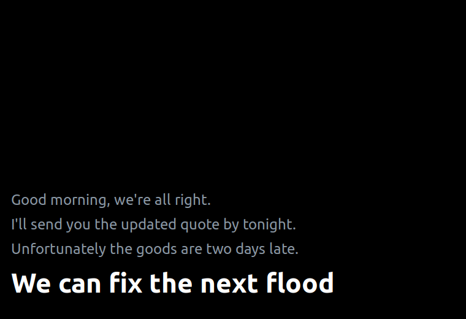

Prima di scaricare: servono circa 655 MB di modelli
I modelli di trascrizione e traduzione non stanno nel repository: al primo avvio il programma ne scarica circa 655 MB. Ogni lingua in più rispetto alla coppia italiano/inglese ne costa altri 190 circa.
Non parte mai un download da solo. install.sh
dichiara quanto scaricherà e chiede conferma; dall'applicazione i modelli si
scaricano solo premendo Installa modelli. Tutto finisce in
~/.local/share/vox-populi/, una cartella sola che puoi
cancellare quando vuoi.
L'interlocutore non installa niente
Nessuna estensione, nessun account, nessun programma da avviare. Usa la sua solita applicazione di videoconferenza e vede una finestra condivisa, come se fosse una presentazione. Tutto il lavoro avviene sul tuo PC.
Funziona anche senza connessione
I modelli girano sul tuo processore. Durante la conversazione non viene inviato niente a Internet; dopo il primo avvio il programma funziona anche staccato dalla rete.
Come funziona
Due flussi audio vengono ascoltati insieme: la voce dell'interlocutore, che arriva dal monitor delle casse o delle cuffie, e la tua, che arriva dal microfono. Entrambi passano per la trascrizione e la traduzione, e finiscono in due finestre diverse.
la voce dell'altro ──► monitor casse/cuffie ──┐
├──► VAD ──► Whisper ──► traduzione ──┐
la tua voce ──► microfono ────────────────────┘ (segmenta) (trascrive) (traduce) │
▼
┌─ Pannello (solo per te) ──┐ ┌─ Finestra per lui (la condividi) ─┐
│ LORO · la sua → la tua │ │ │
│ TU · la tua → la sua │ │ testo grande, ultime frasi │
└───────────────────────────┘ └───────────────────────────────────┘La segmentazione in frasi avviene con un rilevatore di attività vocale: il programma aspetta che tu finisca di parlare (circa mezzo secondo di silenzio), poi trascrive e traduce. Non si interrompe a metà parola.
Come si presenta

Sei schemi di colore
Si scelgono dal pannello e si applicano subito, anche alle finestre già aperte e a quella che stai condividendo. Servono a leggere meglio: c'è chi lavora al buio, chi in pieno sole, e chi ha bisogno del massimo contrasto.
Cosa sente e cosa vede l'interlocutore
Questo punto va capito prima di iniziare, perché cambia il modo di parlare. Le due modalità si scelgono da una casella nel pannello.
A voce spenta (consigliato per iniziare)
Lui ti sente parlare nella tua lingua e legge la traduzione.
| Tu senti | Lui sente | Lui vede | |
|---|---|---|---|
| Tu parli | la traduzione nel pannello | la tua voce vera | la traduzione, nella finestra condivisa |
| Lui parla | la traduzione nel pannello | la propria voce, normalmente | — |
A voce accesa
Lui sente la traduzione pronunciata da una voce sintetica, nella sua lingua. È doppiaggio vero, ma a turni: mentre parli non sente niente, appena finisci la frase sente la traduzione.
| Tu senti | Lui sente | |
|---|---|---|
| Tu parli | la traduzione nel pannello | un breve silenzio, poi la frase tradotta |
| Lui parla | la traduzione nel pannello | la propria voce, normalmente |
A voce accesa la conversazione diventa inevitabilmente più lenta. La voce serve soprattutto a chi fatica a leggere mentre ascolta.
Installazione
Su Debian, Ubuntu e affini:
git clone https://github.com/RedRider21/vox-populi
cd vox-populi
./install.sh
Lo script dice quanto occupa e chiede conferma, poi installa i pacchetti di
sistema mancanti, le dipendenze Python e i modelli, e infine esegue una
diagnosi. È idempotente: rilanciarlo non fa danni e non riscarica ciò che
c'è già. Per saltare la domanda: ./install.sh --si.
Cosa viene scaricato
| Cosa | Dove | Spazio |
|---|---|---|
Trascrizione — Whisper small | ~/.local/share/vox-populi/whisper/ | ~465 MB |
| Traduzione italiano ↔ inglese | ~/.local/share/vox-populi/modelli/ | ~190 MB |
| Totale al primo avvio | ~655 MB |
Tutto sta in una cartella sola: preferenze, elenco delle voci, modelli di
traduzione e modello di trascrizione. Si copia su un'altra macchina e il
programma è già configurato; si cancella e non resta niente. Per
disinstallare basta rm -rf ~/.local/share/vox-populi.
Requisiti
- Linux con PulseAudio o PipeWire
- Sessione X11 — su Wayland la finestra sempre-in-alto può non funzionare
- Python 3.10 o superiore, PyGObject e GTK 3
- Una CPU decente: la trascrizione gira su processore, senza GPU
Lingue e voci
La coppia di lingue si sceglie dal pannello e si può cambiare anche a conversazione avviata. Dove manca la coppia diretta il programma passa dall'inglese come lingua intermedia: funziona, ma allunga leggermente la traduzione e la diagnosi lo segnala.
Le voci non sono un elenco scritto nel programma: vengono chieste al servizio di Microsoft e messe in cache per trenta giorni, così restano aggiornate da sole. Ognuna porta genere e nazionalità — Prabhat · maschile · India — utile per far parlare l'interlocutore con la voce del suo paese invece che con un accento a caso. Se la rete manca, il programma usa sei voci di riserva e continua a funzionare.
Latenza
Misurata su un i5-1235U, a modelli già caricati:
| Stadio | Tempo |
|---|---|
| Attesa di fine frase | ~0,6 s |
| Trascrizione | ~1,75 s |
| Traduzione | ~0,06 s |
| Totale percepito | ~2,4 s |
In pratica: leggi la traduzione della frase precedente mentre l'altro sta già dicendo la successiva. Conviene rassegnarsi a questo ritmo invece di aspettare il testo prima di rispondere, altrimenti la conversazione si impunta.
Licenza
Vox Populi è software libero sotto GNU AGPL v3.0 o successiva. Per usi che non possono rispettarne gli obblighi di copyleft — integrazione in prodotti chiusi, erogazione come servizio senza pubblicare il sorgente — è disponibile una licenza commerciale separata.
Chi vuole contribuire trova le condizioni nel CLA.